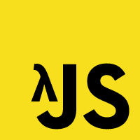

Welcome!
Functional Programming
in JavaScript

Wait, what?
- Functions as primary abstraction - building blocks
- Minimize side-effects
- Immutability
- Declarative vs imperative - processing flow of data
Also:
- Lazy/delayed evaluation
- Composition
- Combinators
- Functors
- Applicatives
- Monoids
- Monads
JavaScript: The Best Parts
What'll the meetup cover?
- Functional programming and it's application
- Functional libraries e.g. Underscore/Lo-Dash, Functional.js, Bacon.js
- AltJS languages: LiveScript, Roy, ClojureScript
- ...and more
Submit a talk!
Drop us a line
Tonight:
- JS == Scheme, Tommy Hall
- FP Dojo
Dojo
Site generator for JSGarden
Original code has quite a bit of state - not required for a transform.
Go!
- github.com/timruffles/JavaScript-Garden/tree/fp-dojo
- Node-based site generator, small - ~200 LOC
- Form groups of 3+
- 1 hour, equal turns driving code
- Then we'll talk through code
Ideas for focus
github.com/timruffles/JavaScript-Garden/tree/fp-dojo
- Split IO/pure functions
- Streams
- Lazy enumerators
- Monads
- Function composition, partials
- Clojurescript, LiveScript etc
Enjoy!